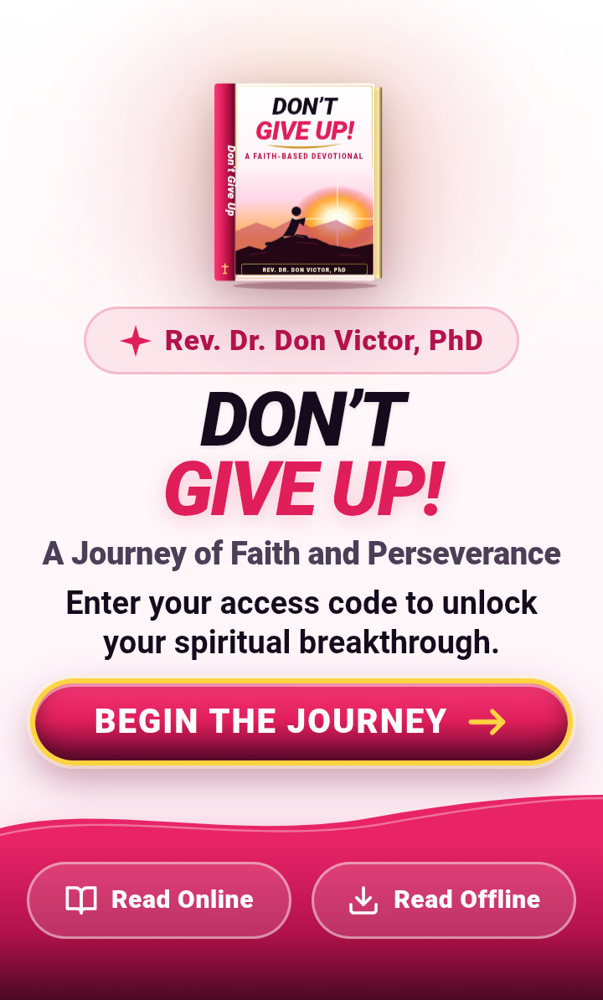

eBook Store: Christian eBooks in Nigeria by Rev. Dr. Don Victor, PhD

Prophet of God | Spiritual Father | Christian Educator | Trainer | Researcher | Author | Software Architect | Ministry Visionary
Rev. Dr. Don Victor, PhD
Prophet of God | Spiritual Father | Christian Educator | Trainer | Researcher | Author | Software Architect | Ministry Visionary
Rev. Dr. Don Victor, PhD
Comes with 128+ prayer points to guide you in self-deliverance and divine intervention.
Perhaps you are smiling outwardly while fighting battles nobody knows about. Perhaps you are holding on by faith when everything around you seems to be falling apart.
Simply scan the QR code for donation and contact details. Once your support and book preference are confirmed, I will send you a personal access code to unlock your e-book.
Cannot scan? Reach me on WhatsApp for one-on-one support.
After successful activation, you can read your e-book anytime, anywhere, without an internet connection.
Your book, always within reach!
Comes with 128+ prayer points to guide you in self-deliverance and divine intervention.
Not every battle is visible, and not every difficult season comes with an explanation. Sometimes, all you need is the right message to restore your perspective and remind you why you must keep going.
Perhaps you are smiling outwardly while fighting battles nobody knows about. Perhaps you are holding on by faith when everything around you seems to be falling apart.

There are seasons when quitting seems easier than continuing. The bills, delays, disappointments and silence can make you wonder whether your efforts still count.
Don't Give Up is a message of encouragement for the weary believer. It reminds you that God is still writing your story and that your breakthrough may be closer than you think.
If you are tired but still believing, this e-book was written for you. Read it daily and let faith carry you into your next chapter.
What you keep saying shapes what you keep seeing. Your future is not decided by your past, your circumstances or the opinions of other people.
Prophesy Your Future teaches you to align your words with the promises of God and to speak life over your health, your family, your work and your destiny.
Stop waiting for tomorrow to happen to you. Open this e-book and begin to speak the future God has prepared for you.
Your world is not random. The words you speak, the faith you hold and the decisions you make are building the life you live in.
Frame Your World shows you how to take charge of your home, your mind, your relationships and your purpose by the Word of God, instead of letting circumstances set your limits.
If you are ready to stop drifting and start building, this e-book will help you frame the world you were created to live in.
The Prayer App is an e-book by Rev. Dr. Don Victor, PhD. It comes with 128+ prayer points to guide you in self-deliverance and divine intervention.
Scan the QR code on the home page for donation and contact details. Once your donation is confirmed, I will send you a personal access code and the app link to unlock your e-book.
Yes. After successful activation, you can read your e-book anytime, anywhere, without an internet connection.
If you cannot scan, reach me on WhatsApp for one-on-one help.
Anyone walking through a difficult season of life, holding on by faith when everything around them seems to be falling apart.
Don't Give Up is an encouraging e-book for anyone who is tired, delayed or discouraged. It reminds you that God is still working in your story.
Anyone walking through a hard season who feels like quitting but still wants to believe.
Scan the QR code on the home page for donation and contact details. Once your donation is confirmed, I will send you a personal access code and the app link to unlock your e-book.
If you cannot scan, reach me on WhatsApp for one-on-one help.
Yes. Your e-book is built to work like an app on your Android phone, so you can open it and read whenever it suits you.
Prophesy Your Future is a 21-day devotional written by Dr. Don Victor, PhD, designed to help you speak Scripture-based declarations over your life. Grounded in the King James Version (KJV) of the Bible, each day features morning and night encounters with biblical teachings, faith declarations, prayers and personal reflections. It teaches that declarations are expressions of faith, not magic formulas, and should be accompanied by prayer, wisdom, obedience and responsible action.
This e-book is for every believer who desires to overcome uncertainty, delays and disappointments by building their expectations on God's Word. Whether you are new to faith declarations or have practised them for years, this devotional will help you establish a consistent daily routine of prayer, reflection and speaking God's Word over your life..
Scan the QR code on the home page for donation and contact details. Once your donation is confirmed, I will send you a personal access code and the app link to unlock your e-book.
If you cannot scan, reach me on WhatsApp for one-on-one.
Yes. The e-book is accessible on smartphones and tablets, allowing you to read conveniently. Its morning and night devotional sessions are designed to fit easily into your daily routine. After the initial activation, you do not need an internet connection to access and read your e-book.
The devotional is structured around one chapter each day, with two daily encounters: Morning: Read the Scripture and teaching, speak the declarations aloud and pray. Night: Revisit the same chapter, reflect on your day and speak the night declarations. The journey unfolds in three phases: Days 1–7: Reposition Your Mind. Days 8–14: Speak Into Your Destiny. Days 15–21: Establish Your Future.
Frame Your World in 31 Days is a five-minute daily devotional by Rev. Don Victor, PhD. It teaches that your words shape your reality and shows you how to replace words of fear and limitation with declarations rooted in God's Word. Each day features a Scripture, a short devotional thought, a daily declaration and a reflection question.
It is for anyone who wants their speech to line up with their faith. It is especially helpful if you have caught yourself describing your problems more than declaring God's promises, or if a setback has left you speaking words of defeat. No prior study is needed, only five minutes a day.
The 31-day journey is divided into three stages, each designed to feel complete and easy to follow. Days 1 to 10 lay the foundation. Days 11 to 20 apply these truths to your personal life, finances, family and future. Days 21 to 31 focus on declarations, authority, blessings and developing a lifelong discipline of speaking God's Word.
Yes. The e-book is designed exclusively for smartphones and tablets, allowing you to read it comfortably and conveniently. Each day's reading is short enough to complete in one sitting, making it easy to fit into your daily routine.
Scan the QR code on the home page for donation and contact details. Once your donation is confirmed, I will send you a personal access code and the app link to unlock your e-book.